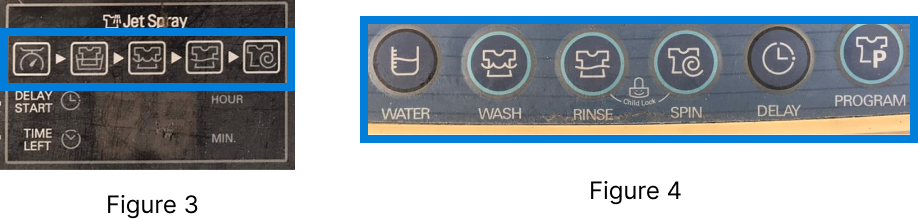
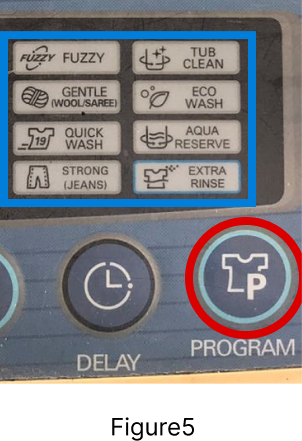

Project Name
LG Control Panel Re-design
Project Summary
The demo project was to re-design the control panel present in LG washing machine to Touch Screen Control panel. I observed the users present in my home using the control panel to wash the clothes. It was difficult for the first time user. And more often the Normal Wash was selected by the user to wash clothes. The other programs was largely ignored because of lack of information about the washing programs. I categorized the Pre-programmed wash and custom wash separately for the user and laid out the functions in such a way the information is present to user and its easy to use.
Below I have posted the figma prototype which shows the re-design of the User Interface. Only few of the flows have been simulated for demo purpose.
Problems found while using control panel during User research
- At first glance, the control panel has lot of function buttons.
- To operate for the first time user needs to get help from the manual or guidance from the Lg service center.
- Each washing programs has different steps which is not very clear to the user.
- There are eight(Figure1) Pre-programmed washing programs and One hidden(Figure 2) (Soak wash - activated by pressing wash button until light turns on the Soak and wash icon simultaneously.) Observation: The user has to recall the Soak Wash Program.

- For eg. for fuzzy washing program functionality, The user has to first power on the Machine > Add the laundry > Select Program > Add the detergent > Press start > pulsator rotates and water and detergent to be used is shown > close the lid() > , water is supplied and washing starts > program starts > finish
- Observation: Most of the time the User uses Fuzzy Wash program(Normal wash). In reality, the user 1) adds the laundry > 2) adds the detergent > 3) press power button. By default Fuzzy is selected. > 4) User Press Start Button, Program starts > 5) Finish
- Observation: The buttons layout is confusing. There are similar icons in the layout. Figure 1> the icons are not buttons. just a indicator with light on to indicate the function during a Wash Program. Figure3 > The icons present in buttons looks the same as Figure 4. But, each button has its own functionality. 
- Observation: To select a washing program the user has to select Program button and a washing program to start washing. Program button is not needed for Touch screen.
- Delay Start: To set Delay in washing the Delay button is pressed to show the Delay Time.
- Child Lock: To set child Lock the Rinse and Spin button is pressed simultaneously. Observation: Some times the process is tedious.
- Manual/Option Washing: There are 6 separate wash which can be set manually, Only wash, Only Rinse, Only Spin, Only Wash-Rinse, Only Rinse,Spin and Only Drain.
- Soak program works with Fuzzy or Strong or Aqua Reserve or Eco Wash or Smart Rinse
Ideation Phase, solution for the problems.
Before Starting the wireframing or prototyping,
- Re-designed the Information Architecture into Washing Programs (Pre-programmed washing programs) and Option Washing (Individual Washing programs)
- Removed Program button for 8 washing Programs from control Panel
- Have Fuzzy has default option
- Separate the Manual/Option Washing Menu in the control panel as secondary menu.
- Separate the Child Lock with passcode and Delay as two separate buttons.
- As per observation, soak, wash and spin functions based on time. Rinse is measured in cycle times. Better to provide separate fields to adjust the time and cycle times. For some of the washing programs there are default time value soak, wash and spin and cycle for rinse.
- If needed the user should be allowed soak, wash, spin and rinse values to be edited
- Based on Washing Program the water level changes or can be set manualy. Provide separate button for increase and decrease water level. For some of the washing programs there are default values for water level.
Learning from the project
Re-designing the IA for the touch screen was challenging and categorize the programs so it easy for the user to understand the functionality
Removing the Program button and focus the user on pre-programmed washing programs with information aid helped user to understand the functionality of each program.
Showing the step by step process for each wash programs helped the users understand at which step(Water>Soak>Wash>Rinse>Spin) the program is selected and functioning during washing clothes.
Separating the Child lock and Delay Time into two buttons helped the user to understand the functionality.